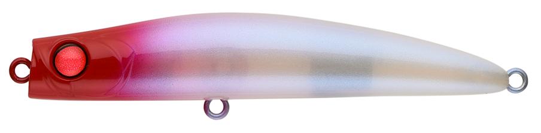
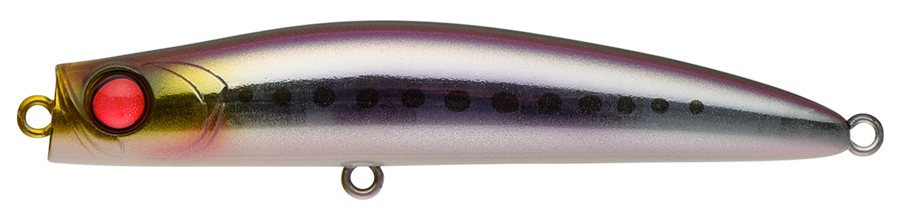
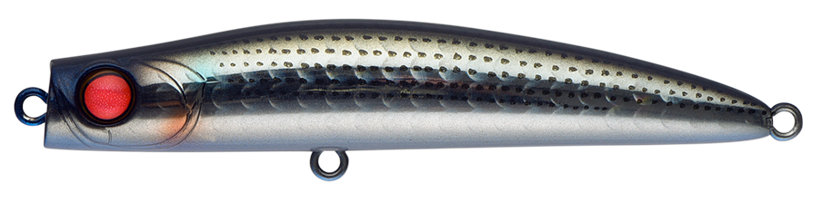
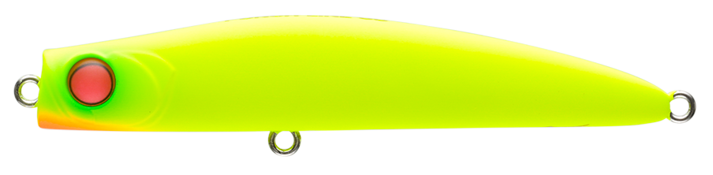

パンチライン80
（PUNCHLINE80）
パンチライン80（PUNCHLINE80）はAPIA（アピア）のシンキングペンシルです。
特徴的なフラットヘッドで水の抵抗を感じられるようにし、シンペンの難点だった「使用感のなさ」を解消した革新的なシンペンとして、今もシーバスシーンに君臨するオリジナルモデル。ルアーの位置を把握しやすく、横方向のS字スラロームと縦方向のローリングフォールで立体的に誘えます。

画像出典:APIA公式HP
スペック
- メーカー
- APIA（アピア）
- タイプ
- シンキングペンシル
- 全長
- 80mm
- 自重
- 13g
- フック
- #6×2（BKK FANGS-62UA）
- アクション
- S字スラローム＋ローリングフォール
- ターゲット
- シーバス
- 価格
- 1,760円（税込）
▼今すぐチェック
パンチライン80の特徴
シンペンなのに「今どこを泳いでいるか」がわかる、フラットヘッドの元祖
-
“抵抗”を感じるフラットヘッド形状
一般的なシンキングペンシルは水を受ける面がほとんど無く、使用感が無いぶん流れをつかむのが難しかった。パンチラインはフラットヘッドで抵抗感を得られるようにし、ルアーのポジションを把握しやすくしている。
-
S字スラロームとローリングフォールで立体的に誘う
横方向ではS字スラローム、縦方向ではローリングフォールという2つの動きで、立体的なアプローチが可能。より戦略的に魚を誘える。
-
ローリングフォールがスレた魚に効く
フォール時は並行姿勢を保ちながらローリングフォールを発生。横方向の動きに反応しなくなった魚や、タフコンディションの打開に効果的。
パンチライン80の使い方
基本はただ巻き。巻くとフラットヘッドが水を受けてS字にスラロームし、引き抵抗で今どこを泳いでいるかを感じ取れます。
流れのある場所では、ラインを張りすぎずに流れに乗せるドリフトも有効。反応が無いときは巻きを止めてローリングフォールを入れ、縦の動きで見せるのがパンチラインらしい使い方です。
パンチライン80の得意な状況
河川・港湾のシーバスゲームが最大の出番。
流れの変化を感じながら探りたいときや、横方向のルアーに反応が薄くなったスレた状況で強い1本です。シンペンに慣れていない人でも、抵抗感があるぶん扱いやすいモデルです。
ワンポイント
シンペンは巻き速度でレンジが変わります。同じレンジを通したいときは、巻き速度を一定に保つのがコツです。
フォールを入れるときは、ラインを少し張ったテンションフォールにすると、ローリングフォールの姿勢が安定しやすくなります。
パンチラインシリーズの使い分け
| モデル | 全長／自重 | 得意な場面 |
|---|---|---|
| パンチライン45 | 45mm／3.4g | 小型ベイトやライトゲームに |
| パンチライン60 | 60mm／5g | 小型ベイトのシーバスに |
| パンチライン80 | 80mm／13g | 河川・港湾のシーバスの基準モデル（本記事のモデル） |
| パンチライン マッスル80 | 80mm／16g | ファストシンキング。同じサイズで飛距離と深さを足したいときに |
| パンチライン マッスル95 | 95mm／28g | ファストシンキング。オープンエリアの遠投に |
| パンチライン130 | 130mm／36g | 大型ベイトや外洋の大場所に |
パンチラインは45〜130mmまでサイズ展開があり、ベイトの大きさと必要な飛距離で選び分けられます。ほかに細身のスリム90（90mm／12g）やカーヴィ70SS（70mm／11g）もラインナップされています。
人気カラー
パンチライン80は全19色展開。シーバス狙いでオススメのカラーを厳選して紹介します。

レッドヘッド定番のレッドヘッド。濁りやナイトでもシルエットを出しやすい。

イワシイワシパターンに合わせたナチュラル系。

ボラボラ（イナッコ）パターンに合わせやすいナチュラル系。

どチャート高アピールのチャート。マズメや濁り潮に。
画像出典:APIA公式HP
パンチライン80に似ているルアー
-
 ハイドロアッパー90S
アピア
詳細はこちら＞
ハイドロアッパー90S
アピア
詳細はこちら＞
全長90mm・自重16gの浮上型シンキングペンシル。逆向きのリップで表層直下をキープでき、パンチラインより浅いレンジを引きたいときに。
-
 スウォーム80S
GOTO9
詳細はこちら＞
スウォーム80S
GOTO9
詳細はこちら＞
全長80mm・自重8.6gのシンキングペンシル。同じ80mmクラスで、より軽く食わせ寄りの選択肢になる。
-
 ローリングベイト77
タックルハウス
詳細はこちら＞
ローリングベイト77
タックルハウス
詳細はこちら＞
全長77mm・自重15gの背面リップ付きシンキングペンシル。重さとサイズが近く、遠投して広く探るローテーションに。